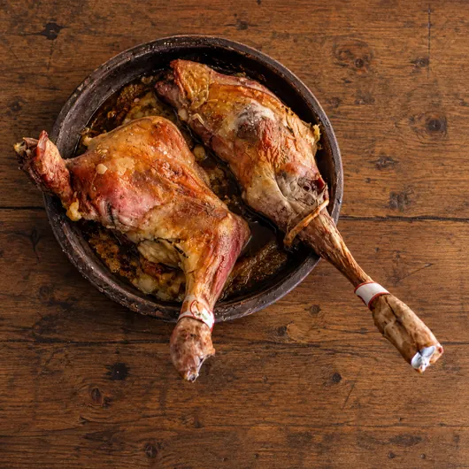
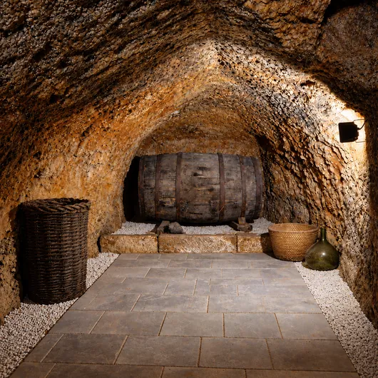
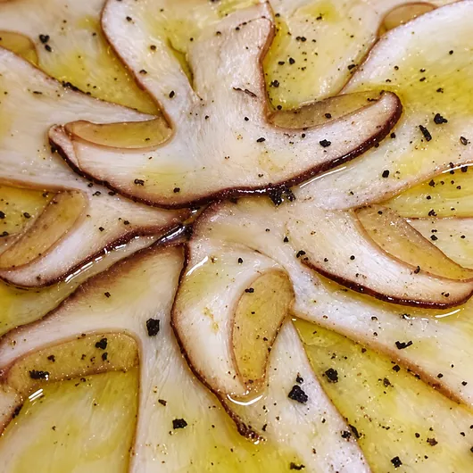
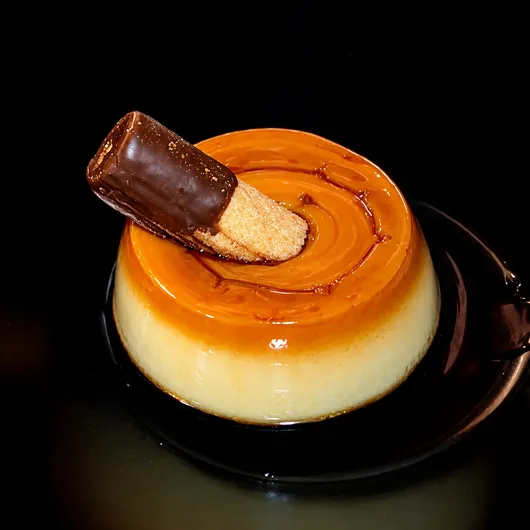

LECHAZO DE LERMA
En Asador Caracoles puedes disfrutar de uno de los productos de mayor prestigio gastronómico de nuestra tierra:
Lechazo asado al horno de leña
CARTAEn Asador Caracoles puedes disfrutar de uno de los productos de mayor prestigio gastronómico de nuestra tierra:
Lechazo asado al horno de leña
CARTA
Sin duda para todo amante de la cocina, Asador Caracoles es un referente.
Cocina tradicional Castellana y productos de temporada del Valle de Arlanza.
Carnes rojas de primera calidad cocinadas a la brasa en nuestra parrilla.



